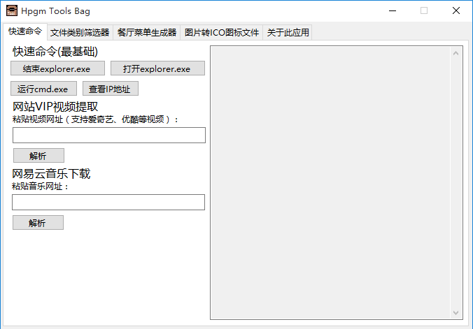
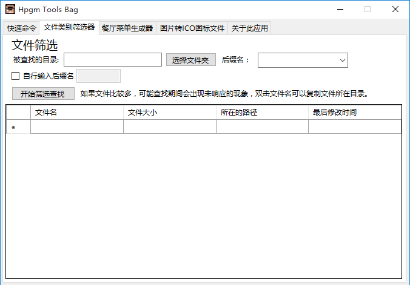
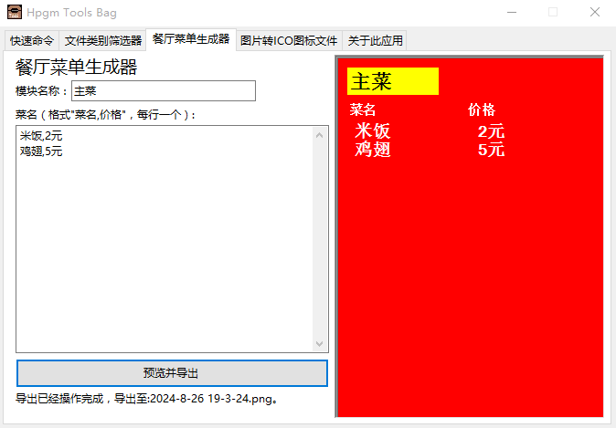
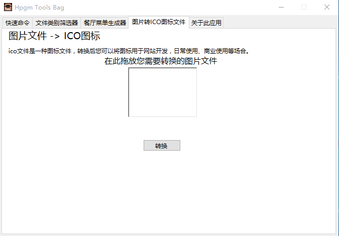

首页工具关于更多
欢迎使用 Hpgm 工具箱_HelloPgrmm
HPGM工具箱
欢迎您选择Hpgm Tools Bag
快速且高效，实用且易用，管理特轻松。

付费视频不用愁
您是否希望不需要任何费用即可收看各种Movie，但是又无法逃过会员的束缚？
现在，您只需要把Movie的网址粘贴在文字的盒子里面，就可以提取付费的Movie。
文件太乱以至于找不到需要的文件吗？
您的文件夹里的文件是否混乱不堪？您可以使用“文件类别筛选器”，支持查找特定后缀名的文件。
这样可以方便与您寻找并且分类相同类别的文件，并且也可以快速地找到自己需要的文件，不需要死板寻找。

餐厅菜单生成器
不需要自己设计，直接生成定制。

ICO图标直接转换
您在设计网页的时候，图标或许是必备的一个元素。
但是您是否烦恼没有图标？ICO图标转换器完美解决。
下载Hpgm工具箱
我的电脑支持它吗？ 您需要具备以下条件：
运行条件:Windows
运行框架：Net FrameWork 4
Copyright (C) Hello-Programming 2023｜仅用于分享编程经验
我的E-mail:qwqexplorer@163.com
语言：
简体中文|
English|
Русский
|
ภาษาไทย|
한국어
|
Deutsch
|
සිංගාපුර්